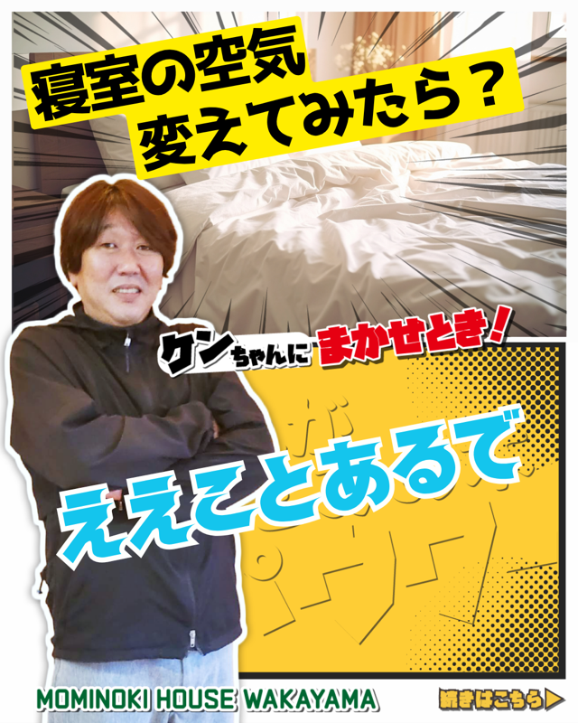
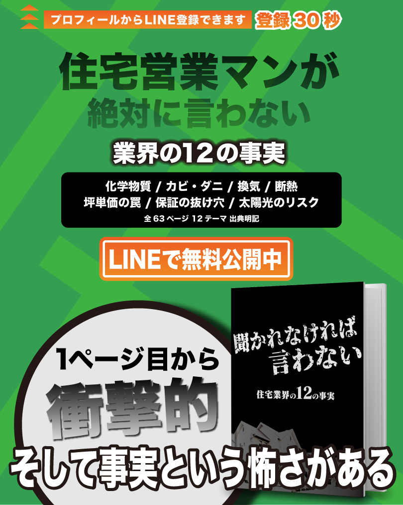
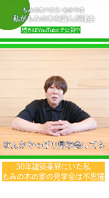
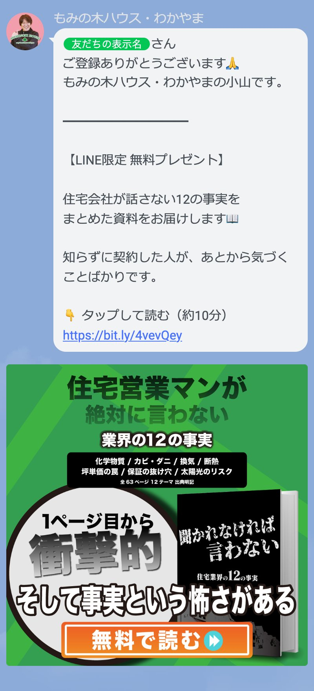
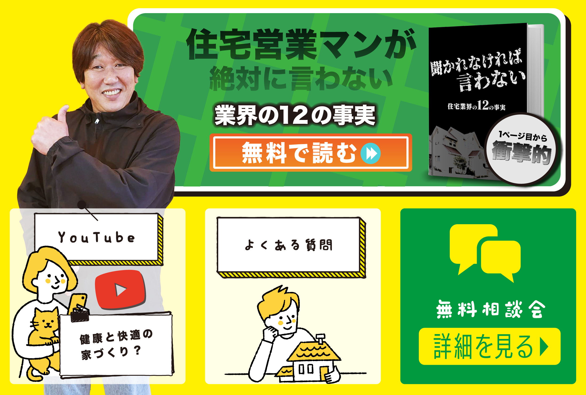
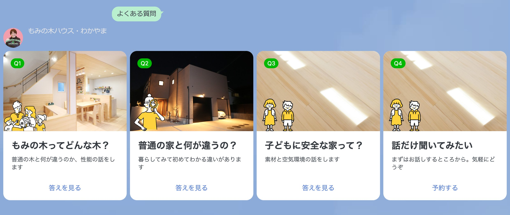

現在構築しているSNS・LINE・Webの動線と、
今後の成長スケジュールをまとめました。
担当: 水信建太（もみの木ハウス新潟）
SECTION 01
SNSで知ってもらい、LINEに登録してもらい、暴露本を読んでもらい、来場予約につなげます。
認知
Instagram / YouTube / Shorts
もみの木の家の暮らし方を発信。興味を持ってもらう
登録
LINE友だち追加
プロフィールや概要欄からLINEに登録してもらう
先行ゴール
暴露本「聞かれなければ言わない」を読む
住宅業界の12の事実。読んだ人の来場率が大幅に上がる
最終ゴール
来場予約 / お問い合わせ
暴露本を読んだ方は「確認作業」として来場するため成約率が高い
核心: 暴露本を読んだ人は「確認作業」として来場します。
新潟の実績では、来場者の成約率は42.3%。これは暴露本とYouTubeで事前に判断材料を持った状態で来場するため、「冷やかし」がほとんどいないからです。
SECTION 02
ブログの内容を6枚のスライドに変換して投稿。最後のページ（P6）でLINE登録に誘導します。

P1: 表紙（タイトル+社長写真）

P6: LINE登録CTA（全社共通）
P1〜P5でブログの内容を伝え、P6で「続きはLINEで」と誘導します。P6のデザインは全社共通で、暴露本への導線を組み込んでいます。
大阪の現在の数値
SECTION 03
長尺動画で信頼を構築し、Shortsで認知を広げます。概要欄とコメント欄にLINE登録リンクを設置。

Shorts: 60秒以内の縦型動画
大阪の現在の数値
参考: 新潟（モデルケース）
登録者5,070人 / 月間53,000回視聴 / 動画286本（Shorts 256本+長尺30本）。7年間の蓄積で、Shortsが月間41,000回以上の視聴を稼いでいます。
SECTION 04
LINE登録した瞬間から、暴露本 → お問い合わせまでの動線が自動で動きます。

あいさつメッセージ（登録直後に自動送信）

リッチメニュー（常時表示）

よくある質問（カルーセル4択 → 自動回答）
LINE登録すると、すぐに暴露本のリンクが届きます。リッチメニューからはいつでも暴露本・YouTube・よくある質問・相談予約にアクセスできます。「よくある質問」ではカルーセルから4つの質問を選ぶと、自動で回答が届きます。
LINE動線の構成
SECTION 05
暴露本が「問題を知る」装置。本音トークLPが「直接聞く」導線です。
SECTION 06
現在の数値から、誇張なく現実的なスケジュールを算出しています。
新潟（モデルケース）の実績
| 指標 | 現在 | 3ヶ月後 | 6ヶ月後 | 12ヶ月後 |
|---|---|---|---|---|
| YT登録者 | 開始直後 | 50 | 150 | 400 |
| YT月間視聴 | - | 1,500 | 8,000 | 20,000 |
| IGフォロワー | 準備中 | 80 | 250 | 600 |
| 月間Imp合計 | - | 5,000 | 20,000 | 45,000 |
| LINE月間純増 | 0人 | 1人 | 5人 | 14人 |
| 暴露本タップ | - | 0.3人 | 1.3人 | 3.5人 |
| 月間来場予測 | 0人 | 0.1人 | 0.2人 | 0.6人 |
算出根拠:
SNS Imp → LINE登録: 転換率0.03〜0.05%（業界平均。出典: ARC Marketing / SINIS調査）
LINE登録 → 暴露本タップ: 25%（自社実測値。LINE不動産業界クリック率20〜30%の範囲内）
LINE登録 → 来場: 2〜5%（90日以内。出典: LIFULL HOME'S / 業界ヒアリング）
上記は現在の投稿頻度（IG週3本、Shorts週2本）を維持した場合の推計です。
現在〜3ヶ月（基盤構築期）
IG投稿の継続（P6暴露本CTA統一）、Shorts週2本投稿、LINE動線の自動化完了
目標: 月間Imp 35,000 / LINE純増 5人/月
3〜6ヶ月（認知拡大期）
Shortsの再生数が積み上がり始める。暴露本読了者からの初回来場が発生
目標: 月間Imp 55,000 / LINE純増 14人/月 / 来場 0.8人/月
6〜12ヶ月（成果実感期）
動画の蓄積効果で月間視聴が加速。ステップ配信+暴露本で来場予約が安定化
目標: 月間Imp 90,000 / LINE純増 27人/月 / 来場 1.5人/月
業界ベンチマーク（住宅・工務店）
なぜ新潟の成約率は業界平均の2倍なのか？
業界平均の成約率は10〜15%（出典: LIFULL HOME'S / 船井総研）。新潟はその3〜4倍です。
暴露本とYouTubeで事前に十分な判断材料を持った状態で来場するため、「比較検討中の冷やかし」がほとんどいません。来場者は「もみの木の家に決めたい。最後の確認をしに来た」という状態です。
この仕組みを和歌山でも同じように構築しています。